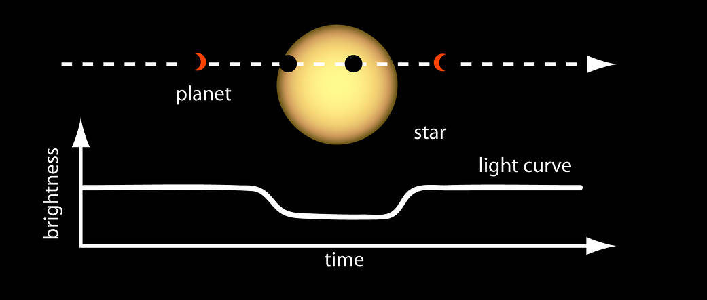

Searching Exoplanets has been a long quest and studying them has enabled
us to perform statistical studies and answer key questions about the planet formation and
their evolution. 51 Pegasi b was the first exoplanet discovered around the solar like stars.
Here we discuss about the various methods for the detection of the Exoplanets.
These methods includes: Radial velocity method which was used for the discovery of 51 Pegasi b.
 Credit: Las Cumbres Observatory
Credit: Las Cumbres Observatory
The Transit method is helpful to know about the atmosphere and weather of an exoplanet, this is because
during transit the light from the host star will pass through the atmosphere of the exoplanet, thus revealing
the molecular absorption in the exosphere. This was first carried out by Charbonneau et al. who detected
sodium absorption features in the atmosphere of hot Jupiter HD 209458b. However, transit method is
difficult for searching smaller exoplanets since they require very high photometric accuracy.
Thus Kepler spacecraft, space based telescope is the key.
Transit Method. Credit: NASA Ames
So to detect the low mass exoplanets we use another method called Gravitational microlensing, which
relies on gravitational lensing by the planet. Bohdan Paczynski was the first person to demonstrate
that microlensing is capable of detecting compact stellar objects associated with exoplanets.
We can also directly detect the exoplanet through the Direct imaging method, which can help us
distinguish between the photons of the exoplanet from that of the host star. It also helps us
understand exoplanet formation and evolution with time. Most of the exoplanets discovered by
this method are far away from the host star (large orbital distance), thus is a challenge to
in situ planet formation mechanism.
.png) Figure: Orbital distances and mass distributions of
exoplanets from radial velocity, transit,microlensing, and direct imaging methods. Data gathered from NASA Exoplanet Archive.
Figure: Orbital distances and mass distributions of
exoplanets from radial velocity, transit,microlensing, and direct imaging methods. Data gathered from NASA Exoplanet Archive.
To get an idea about evolution of planets we need an accurate measurement of their mass and radii.
The radial velocity method gives a precise mass and radius estimate, which can further provide us
insights about the mass-radius relation. This results in finding of the density, structure and the
gas envelope present in the exoplanet and to get atmospheric details we use the transit method.
So we infer that planet formation depends on the mass-radius relation and the orbital distance.
One of the process includes core accretion, where small particles collide, coagulate and accrete
gases from surrounding to form Jovian planets. It results in planet which are metallicity
dependent (elements other than H and He). In disk instability planet formation process, the
protoplanetary disk becomes cool and dense and thus unstable to gravitational collapse and
form gaseous planets. This process has got no metallicity. Planetary scattering and
cloud fragmentation processes takes place when the planets are formed at larger orbital distance
or far away from the host stars. It has been found that most exoplanets have been formed by the
core accretion method.